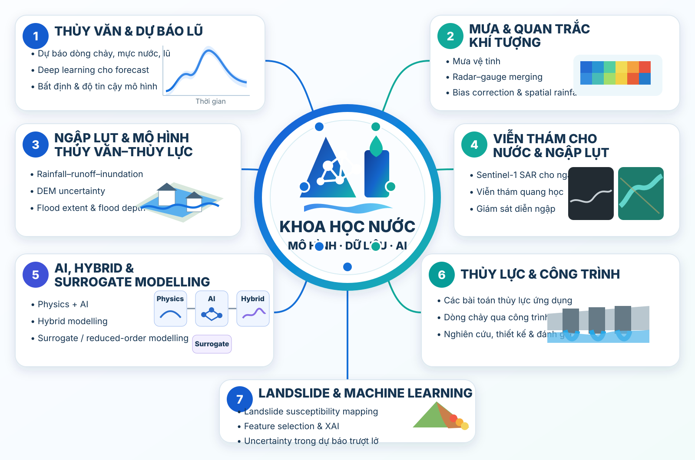
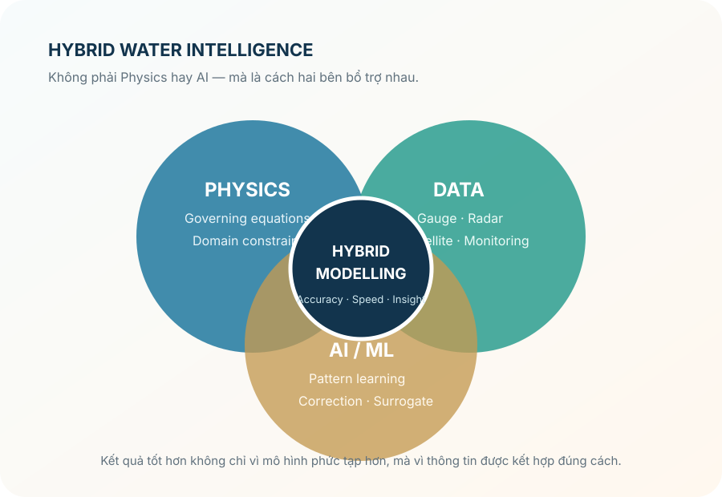
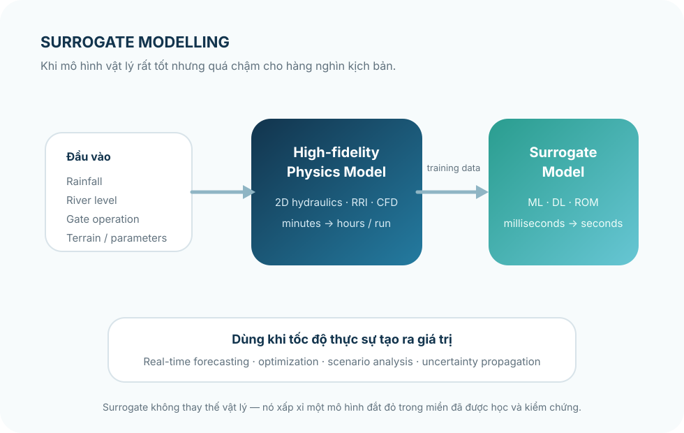

01 · HYDROLOGY
Dự báo thủy văn & dòng chảy
Dự báo lưu lượng, mực nước và lũ; event-scale forecasting; rainfall–runoff modelling và các bài toán vận hành hồ/cống.
Hydrology · Hydraulics · Remote Sensing · Artificial Intelligence
Khoa học Nước bằng mô hình, dữ liệu và AI
Giảng viên · Khoa Kỹ thuật Tài nguyên nước · Trường Đại học Thủy lợi
Nghiên cứu tập trung ở vùng giao giữa thủy văn, thủy lực, viễn thám và khoa học dữ liệu. Trọng tâm không chỉ là cải thiện độ chính xác của mô hình, mà còn hiểu vì sao mô hình hoạt động tốt, khi nào kết quả có thể thiếu tin cậy, và giá trị thực tế của kết quả đó trong các bài toán nước.
Tổng quan nghiên cứu
Từ quan trắc mưa và dòng chảy, mô hình thủy văn–thủy lực, viễn thám đến AI và bất định. Một số hướng đã có chuỗi công bố tương đối rõ; một số khác như optical remote sensing cho sediment và surrogate modelling đang tiếp tục được phát triển.

Giới thiệu
Hiện công tác tại Khoa Kỹ thuật Tài nguyên nước, Trường Đại học Thủy lợi. Trước đó là giai đoạn học tiến sĩ và nghiên cứu sau tiến sĩ tại Kyungpook National University, Hàn Quốc, tiếp theo là thời gian nghiên cứu tại Chuo University, Nhật Bản.
Các giai đoạn có chủ đề khá khác nhau nhưng cùng một mạch: dự báo dòng chảy và mực nước, mưa vệ tinh và radar, mô phỏng ngập, Sentinel-1 SAR, landslide, thủy lực công trình, uncertainty/XAI và gần đây là các hướng kết hợp physics–data.
Điều đáng quan tâm không chỉ là một mô hình “chạy được”. Dữ liệu đầu vào có vấn đề gì, bất định đến từ đâu, kết quả nhạy với giả thiết nào, và khả năng chuyển sang lưu vực hay điều kiện khác mới là những câu hỏi khó hơn.
Các cụm chủ đề
Dự báo lưu lượng, mực nước và lũ; event-scale forecasting; rainfall–runoff modelling và các bài toán vận hành hồ/cống.
Mưa vệ tinh, bias correction, radar–gauge merging, Sentinel-1 SAR và các hướng optical remote sensing cho sediment/water colour.
Rainfall–runoff–inundation, DEM/topographic uncertainty, flood extent/depth và độ nhạy không gian của kết quả mô phỏng.
Các bài toán thủy lực ứng dụng, dòng chảy qua công trình, đánh giá đặc tính thủy lực và các cách kết hợp mô hình vật lý, mô hình số với machine learning.
Từ landslide susceptibility mapping bằng ML đến feature selection, explainable AI và lượng hóa bất định.
Deep learning, ensemble, uncertainty, physics–data integration và surrogate/reduced-order modelling cho các mô hình có chi phí tính toán lớn.
Câu chuyện từ nghiên cứu
Không phải tóm tắt bài báo, mà là những câu hỏi khiến dữ liệu, mô hình hoặc cách đánh giá phải được xem lại kỹ hơn.

Metric ở trạm có thể tốt nhưng cấu trúc mưa theo không gian vẫn sai. Với mô hình thủy văn, sự khác biệt này đôi khi quan trọng hơn vẻ ngoài của bản đồ.
Đọc bài liên quan ↗
Hybrid modelling giữ lại những gì đã biết về hệ vật lý, rồi dùng dữ liệu để bổ sung phần còn thiếu hoặc quá khó mô tả.

Surrogate modelling hấp dẫn vì điều đó. Nhưng tốc độ chỉ có ý nghĩa khi miền áp dụng, sai số và giới hạn của mô hình thay thế được nói rõ.
Các bài toán thủy lực ứng dụng là nơi empirical formula, numerical modelling và ML có thể kiểm tra chéo, thay vì cạnh tranh để thay thế lẫn nhau.
Một ví dụ ↗Một hướng mở rộng tự nhiên từ flood SAR sang optical remote sensing cho sediment/water colour, kết nối viễn thám, thủy lực và vận chuyển vật chất.
Ghi nhận
Mỗi dấu mốc gắn với một giai đoạn và một hướng nghiên cứu khác nhau.
Một trong những công trình có ảnh hưởng rộng trong chuỗi nghiên cứu và được Water xếp trong nhóm bài được trích dẫn nhiều.
Giai đoạn nghiên cứu tại Real-time Flood Prediction R&D Unit, Research and Development Initiative.
Công bố
Các bài được chọn để đại diện cho từng giai đoạn và hướng nghiên cứu; danh sách đầy đủ được cập nhật trên Google Scholar.
Xuan-Hien Le, Naoki Koyama, Tadashi Yamada · Journal of Hydrology.
DOI ↗Xuan-Hien Le et al. · Remote Sensing.
DOI ↗Xuan-Hien Le et al. · Water.
DOI ↗ · Video abstract ↗Xuan-Hien Le et al. · Frontiers in Environmental Science.
DOI ↗Xuan-Hien Le et al. · Remote Sensing.
DOI ↗Xuan-Hien Le et al. · Water.
DOI ↗Guest Editor
Một cách hữu ích để theo dõi các hướng mới của cộng đồng ngoài những chủ đề đang trực tiếp triển khai.
Ghi chú nghiên cứu
Những ghi chú ngắn, thực tế, đặc biệt hữu ích khi quá tập trung vào kết quả cuối.
NSE đẹp không bảo đảm peak flow, timing hay bias đều ổn. Với flood forecasting, nên nhìn nhiều góc cùng lúc.
Đổi sản phẩm mưa, DEM hoặc cách tiền xử lý có thể làm kết quả thay đổi nhiều hơn việc đổi từ model A sang model B.
Tốc độ rất hấp dẫn. Nhưng domain of validity, extrapolation và uncertainty của surrogate cần được nói rõ trước khi dùng cho quyết định.
Liên hệ
Các chủ đề giao nhau về hydrology, hydraulics, floods, remote sensing, uncertainty hoặc AI cho khoa học nước đều phù hợp để trao đổi và hợp tác.